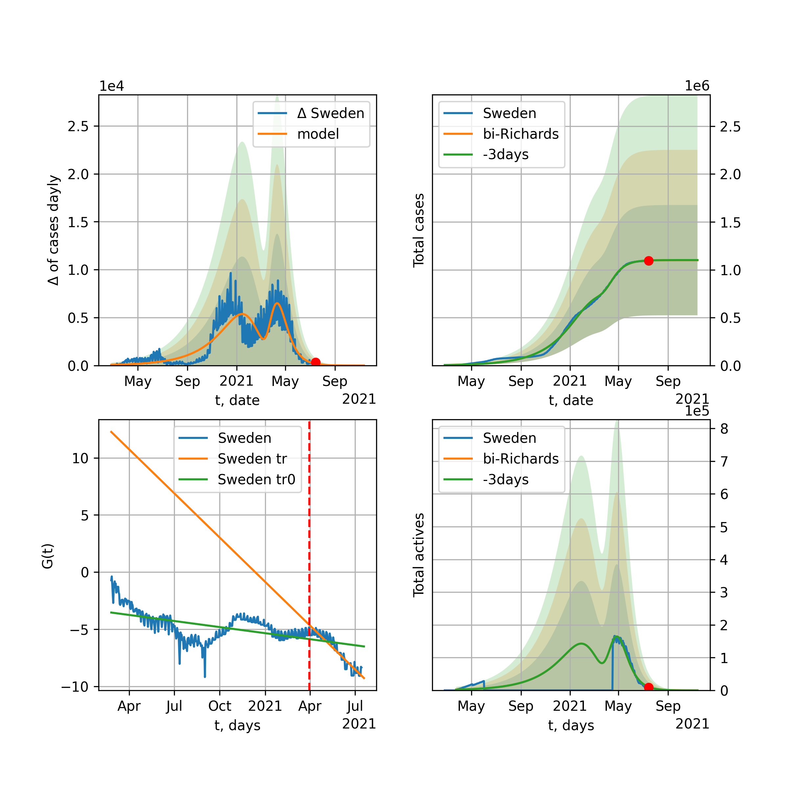
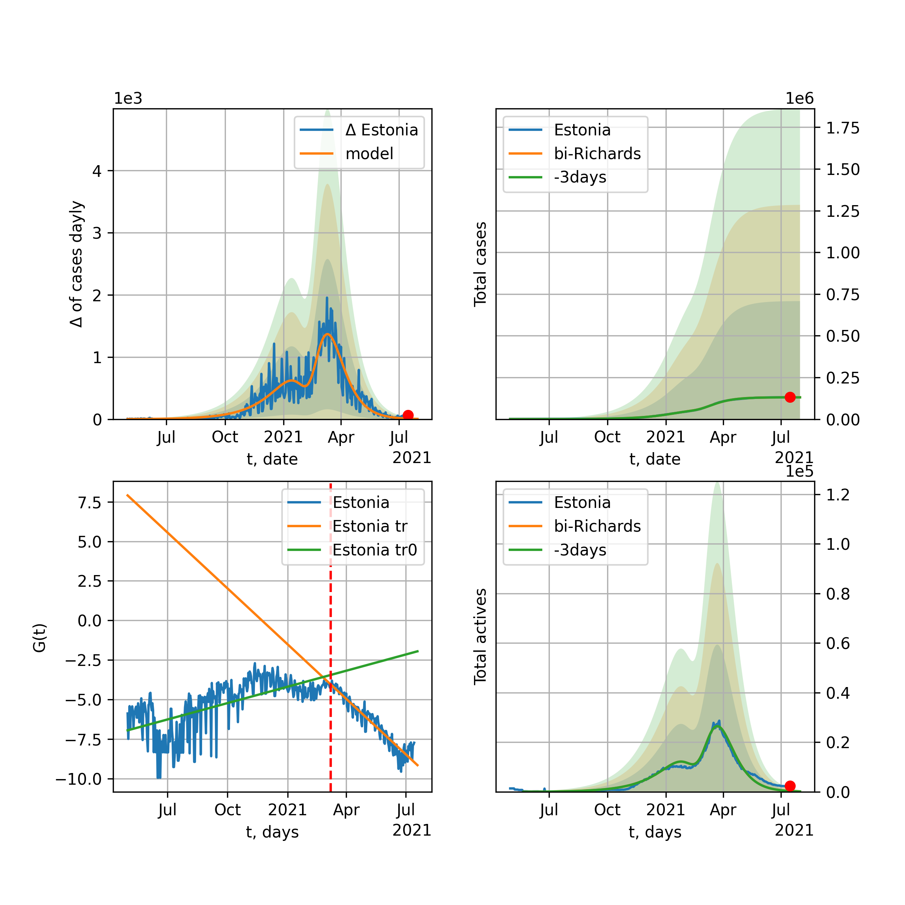

Multi-logistic model of COVID-19 dynamics
Model, code, results
Project maintained by algmaknick Hosted on GitHub Pages — Theme by mattgraham
World

World data at: 2020-07-16
+3 day model MAPE: 0.005804
model: bi-Richards
coeffs: [ 2.81091970e+07 8.91509864e-01 -6.22701149e+01 2.25685174e-02]
rational stdev: 0.075001
forecast at the end of period: +340 days
deltaDaycases: 718
total cases: 33176346 ± 2488273
total death: 1409426 ± 317126
bi-Richards approximation splitting point: 50
trend coefficient of determination: 0.845817
intercept: -2.385556
slope: -0.033900
trend coefficient of determination: 0.369678
intercept: -4.012690
slope: -0.003985
European Union

European Union data at: 2020-07-16
+3 day model MAPE: 0.002588
model: bi-Richards
coeffs: [ 4.32518358e+05 2.51135958e+00 -8.11620302e+01 9.96166612e-03]
rational stdev: 0.536304
forecast at the end of period: +114 days
deltaDaycases: 305
total cases: 1502640 ± 805872
total death: 149733 ± 240907
bi-Richards approximation splitting point: 83
trend coefficient of determination: 0.943558
intercept: -1.119972
slope: -0.057459
trend coefficient of determination: 0.005884
intercept: -5.734259
slope: -0.001495
Brazil

Brazil data at: 2020-07-16
+3 day model MAPE: 0.003173
model: Richards
coeffs: [5.07415025e+06 2.49975862e-01 1.55045904e+01 8.47091463e-02]
rational stdev: 0.350009
forecast at the end of period: +380 days
deltaDaycases: 33
total cases: 5072590 ± 1775454
total death: 193417 ± 203093
trend coefficient of determination: 0.331854
intercept: -2.565753
slope: -0.018065
Russia

Russia data at: 2020-07-16
+3 day model MAPE: 0.007171
model: Richards
coeffs: [ 8.80832790e+05 3.00871221e+00 -7.86869435e+01 1.04802147e-02]
rational stdev: 0.252653
forecast at the end of period: +170 days
deltaDaycases: 24
total cases: 880082 ± 222355
total death: 13955 ± 10577
trend coefficient of determination: 0.948527
intercept: -1.362126
slope: -0.029921
USA

USA data at: 2020-07-16
+3 day model MAPE: 0.000511
model: bi-Richards
coeffs: [1.21618323e+07 6.34317585e-01 6.29947450e+00 3.52576725e-02]
rational stdev: 0.269206
forecast at the end of period: +324 days
deltaDaycases: 408
total cases: 14259232 ± 3838669
total death: 544579 ± 439811
bi-Richards approximation splitting point: 90
trend coefficient of determination: 0.944818
intercept: -1.559950
slope: -0.044236
trend coefficient of determination: 0.798502
intercept: -6.847755
slope: 0.019205
Spain

Spain data at: 2020-07-16
+3 day model MAPE: 0.004106
model: bi-Richards
coeffs: [ 1.36708297e+06 2.83150757e-01 -6.02084116e+01 3.29282797e-02]
rational stdev: 0.201492
forecast at the end of period: +716 days
deltaDaycases: 80
total cases: 1649955 ± 332452
total death: 153251 ± 92636
bi-Richards approximation splitting point: 93
trend coefficient of determination: 0.958997
intercept: -0.914048
slope: -0.062354
trend coefficient of determination: 0.325748
intercept: -9.105904
slope: 0.017539
Italy

Italy data at: 2020-07-16
+3 day model MAPE: 0.000408
model: bi-Richards
coeffs: [ 1.66367499e+04 4.02882313e+00 -8.08795061e+01 6.38745592e-03]
S.Korea scenario coeffs: [0.36242246, 2.56241634, 1.84890887, 0.13324732]
rational stdev: 0.055935
forecast at the end of period: +100 days
deltaDaycases: 18
total cases: 250500 ± 14011
total death: 35988 ± 6038
bi-Richards approximation splitting point: 85
trend coefficient of determination: 0.982603
intercept: -1.045217
slope: -0.057278
trend coefficient of determination: 0.551976
intercept: -4.357829
slope: -0.021807
United Kingdom

United Kingdom data at: 2020-07-16
+3 day model MAPE: 0.003849
model: bi-Richards
coeffs: [1.22927233e+04 9.05130110e+00 3.05925294e+01 7.38954570e-03]
rational stdev: 0.129694
forecast at the end of period: +100 days
deltaDaycases: 2
total cases: 300032 ± 38912
total death: 46272 ± 18003
bi-Richards approximation splitting point: 115
trend coefficient of determination: 0.976105
intercept: -1.427694
slope: -0.042929
trend coefficient of determination: 0.158370
intercept: -9.458834
slope: 0.026320
France

France data at: 2020-07-16
+3 day model MAPE: 0.003315
model: bi-Richards
coeffs: [ 4.70366549e+04 3.13664933e+00 -4.26764405e+01 1.03766447e-02]
rational stdev: 0.089506
forecast at the end of period: +72 days
deltaDaycases: 50
total cases: 185016 ± 16560
total death: 32075 ± 8612
bi-Richards approximation splitting point: 86
trend coefficient of determination: 0.904009
intercept: -0.835865
slope: -0.068800
trend coefficient of determination: 0.003531
intercept: -6.196721
slope: 0.002120
Germany

Germany data at: 2020-07-16
+3 day model MAPE: 0.000852
model: bi-Richards
coeffs: [ 3.14371674e+04 5.27400782e+00 -3.73607916e+01 7.10191140e-03]
rational stdev: 0.122818
forecast at the end of period: +16 days
deltaDaycases: 188
total cases: 205090 ± 25188
total death: 9304 ± 3428
bi-Richards approximation splitting point: 94
trend coefficient of determination: 0.950729
intercept: -1.430426
slope: -0.061153
trend coefficient of determination: 0.003979
intercept: -6.019120
slope: -0.002784
Turkey

Turkey data at: 2020-07-16
+3 day model MAPE: 0.000886
model: bi-Richards
coeffs: [8.47240303e+04 2.05107427e+00 4.00671262e-02 1.95648524e-02]
rational stdev: 0.186174
forecast at the end of period: +86 days
deltaDaycases: 45
total cases: 244850 ± 45584
total death: 6141 ± 3429
bi-Richards approximation splitting point: 75
trend coefficient of determination: 0.787887
intercept: -1.024393
slope: -0.059091
trend coefficient of determination: 0.122412
intercept: -4.932001
slope: -0.004179
Iran

Iran data at: 2020-07-16
+3 day model MAPE: 0.006728
model: bi-Richards
coeffs: [ 2.24903056e+05 2.79570109e+00 -2.66860352e+01 1.18572179e-02]
rational stdev: 0.249287
forecast at the end of period: +184 days
deltaDaycases: 5
total cases: 327211 ± 81569
total death: 16672 ± 12468
bi-Richards approximation splitting point: 75
trend coefficient of determination: 0.949244
intercept: -0.917145
slope: -0.055176
trend coefficient of determination: 0.632704
intercept: -3.516656
slope: -0.008589
Canada

Canada data at: 2020-07-16
+3 day model MAPE: 0.021963
model: bi-Richards
coeffs: [5.59593282e+03 1.50595158e+01 8.61382016e+01 7.56540173e-03]
rational stdev: 0.200855
forecast at the end of period: +86 days
deltaDaycases: 3
total cases: 115720 ± 23243
total death: 9348 ± 5632
bi-Richards approximation splitting point: 114
trend coefficient of determination: 0.947336
intercept: -1.271197
slope: -0.039961
trend coefficient of determination: 0.037342
intercept: -7.623117
slope: 0.013097
South Africa

South Africa data at: 2020-07-16
+3 day model MAPE: 0.011549
model: bi-Richards
coeffs: [1.48559863e+07 6.86952685e-02 1.59024316e+02 2.81510224e-01]
rational stdev: 0.291374
forecast at the end of period: +408 days
deltaDaycases: 742
total cases: 14819332 ± 4317967
total death: 213408 ± 186544
bi-Richards approximation splitting point: 30
trend coefficient of determination: 0.659047
intercept: -1.401537
slope: -0.140549
trend coefficient of determination: 0.734167
intercept: -4.667946
slope: -0.014683
Belgium

Belgium data at: 2020-07-16
+3 day model MAPE: 0.002311
model: bi-Richards
coeffs: [ 5.86957190e+03 5.20591415e+00 -9.55090888e+00 7.76942572e-03]
rational stdev: 0.531744
forecast at the end of period: +65 days
deltaDaycases: 9
total cases: 65426 ± 34790
total death: 10134 ± 16166
bi-Richards approximation splitting point: 105
trend coefficient of determination: 0.958223
intercept: -1.274232
slope: -0.055337
trend coefficient of determination: 0.187856
intercept: -17.212873
slope: 0.087186
Peru

Peru data at: 2020-07-16
+3 day model MAPE: 0.014307
model: bi-Richards
coeffs: [ 1.37342542e+05 4.56787501e+00 -1.91295917e+01 9.14253855e-03]
rational stdev: 0.164805
forecast at the end of period: +170 days
deltaDaycases: 2
total cases: 391151 ± 64463
total death: 14445 ± 7141
bi-Richards approximation splitting point: 70
trend coefficient of determination: 0.548197
intercept: -1.448796
slope: -0.027099
trend coefficient of determination: 0.834397
intercept: -1.348828
slope: -0.027326
Netherlands

Netherlands data at: 2020-07-16
+3 day model MAPE: 0.001997
model: bi-Richards
coeffs: [5.04539693e+03 1.14300708e+01 1.52349806e+01 6.41565610e-03]
rational stdev: 0.030277
forecast at the end of period: +16 days
deltaDaycases: 7
total cases: 51267 ± 1552
total death: 6126 ± 556
bi-Richards approximation splitting point: 75
trend coefficient of determination: 0.959904
intercept: -1.262029
slope: -0.062251
trend coefficient of determination: 0.209794
intercept: -2.320668
slope: -0.040777
India

India data at: 2020-07-16
+3 day model MAPE: 0.010999
model: Richards
coeffs: [ 2.29879949e+07 2.19036472e-01 -5.14906451e+01 4.64954690e-02]
rational stdev: 0.379930
forecast at the end of period: +590 days
deltaDaycases: 1941
total cases: 22797474 ± 8661451
total death: 580703 ± 661879
trend coefficient of determination: 0.737660
intercept: -2.008198
slope: -0.017540
Switzerland

Switzerland data at: 2020-07-16
+3 day model MAPE: 0.001153
model: bi-Richards
coeffs: [3.01870895e+04 4.75914010e-02 1.73936125e+02 4.04651932e+00]
rational stdev: 0.284715
forecast at the end of period: +86 days
deltaDaycases: 1
total cases: 60698 ± 17281
total death: 3590 ± 3066
bi-Richards approximation splitting point: 75
trend coefficient of determination: 0.801389
intercept: -32.423009
slope: -0.274691
trend coefficient of determination: 0.553876
intercept: -52.535002
slope: 0.036212
Ecuador

Ecuador data at: 2020-07-16
+3 day model MAPE: 0.013787
model: bi-Richards
coeffs: [2.41862671e+04 6.53499142e+00 4.50154664e+01 1.22539659e-02]
rational stdev: 0.094005
forecast at the end of period: +100 days
deltaDaycases: 7
total cases: 84540 ± 7947
total death: 6168 ± 1739
bi-Richards approximation splitting point: 90
trend coefficient of determination: 0.213086
intercept: -2.488899
slope: -0.040127
trend coefficient of determination: 0.120607
intercept: -13.395498
slope: 0.081263
Portugal

Portugal data at: 2020-07-16
+3 day model MAPE: 0.001303
model: bi-Richards
coeffs: [ 4.49828095e+04 1.14818718e+00 -8.90095362e+01 1.82335777e-02]
rational stdev: 0.038056
forecast at the end of period: +170 days
deltaDaycases: 19
total cases: 69700 ± 2652
total death: 2450 ± 279
bi-Richards approximation splitting point: 50
trend coefficient of determination: 0.914312
intercept: -1.132459
slope: -0.073935
trend coefficient of determination: 0.003907
intercept: -4.932871
slope: -0.000879
Saudi Arabia

Saudi Arabia data at: 2020-07-16
+3 day model MAPE: 0.004216
model: bi-Richards
coeffs: [1.52496562e+05 1.72292704e-01 8.28473457e+01 4.06120568e-01]
rational stdev: 0.161967
forecast at the end of period: +79 days
deltaDaycases: 23
total cases: 283901 ± 45982
total death: 2766 ± 1344
bi-Richards approximation splitting point: 75
trend coefficient of determination: 0.944268
intercept: -4.296514
slope: -0.054866
trend coefficient of determination: 0.785471
intercept: -5.940134
slope: -0.028008
Sweden

Sweden data at: 2020-07-16
+3 day model MAPE: 0.003083
model: bi-Richards
coeffs: [3.02900462e+04 2.08664069e-01 9.85052835e+01 4.98599148e-01]
rational stdev: 0.226899
forecast at the end of period: +65 days
deltaDaycases: 14
total cases: 81504 ± 18493
total death: 5929 ± 4035
bi-Richards approximation splitting point: 90
trend coefficient of determination: 0.875026
intercept: -3.669514
slope: -0.075767
trend coefficient of determination: 0.555440
intercept: -4.708290
slope: -0.045099
Pakistan

Pakistan data at: 2020-07-16
+3 day model MAPE: 0.009334
model: bi-Richards
coeffs: [2.72501346e+05 5.62206273e-02 1.07193920e+02 1.58931942e+00]
S.Korea scenario coeffs: [0.36242246, 2.56241634, 1.84890887, 0.13324732]
rational stdev: 0.369498
forecast at the end of period: +205 days
deltaDaycases: 192
total cases: 366416 ± 135390
total death: 7715 ± 8552
bi-Richards approximation splitting point: 25
trend coefficient of determination: 0.836678
intercept: -3.458855
slope: -0.351238
trend coefficient of determination: 0.974919
intercept: -12.179721
slope: -0.093762
Ireland

Ireland data at: 2020-07-16
+3 day model MAPE: 0.000821
model: Richards
coeffs: [2.53953883e+04 2.21290262e-01 1.99839917e+01 4.15005167e-01]
rational stdev: 0.148427
forecast at the end of period: +72 days
deltaDaycases: 0
total cases: 25395 ± 3769
total death: 1728 ± 769
trend coefficient of determination: 0.924197
intercept: -3.881411
slope: -0.075419
Mexico

Mexico data at: 2020-07-16
+3 day model MAPE: 0.002472
model: Richards
coeffs: [ 1.03631250e+06 5.06160284e-01 -8.43473320e+01 3.26870650e-02]
S.Korea scenario coeffs: [0.36242246, 2.56241634, 1.84890887, 0.13324732]
rational stdev: 0.207985
forecast at the end of period: +1080 days
deltaDaycases: 214
total cases: 1371693 ± 285291
total death: 159054 ± 99242
trend coefficient of determination: 0.919589
intercept: -2.106678
slope: -0.020363
Singapore

Singapore data at: 2020-07-15
+3 day model MAPE: 0.002479
model: bi-Richards
coeffs: [3.76579029e+04 2.21812686e+00 2.12385458e+00 1.79383343e-02]
rational stdev: 0.471896
forecast at the end of period: +101 days
deltaDaycases: 2
total cases: 49414 ± 23318
total death: 28 ± 39
bi-Richards approximation splitting point: 70
trend coefficient of determination: 0.065110
intercept: -2.543888
slope: -0.012550
trend coefficient of determination: 0.630551
intercept: 0.684227
slope: -0.041076
Chile

Chile data at: 2020-07-16
+3 day model MAPE: 0.006689
model: Richards
coeffs: [3.39425905e+05 6.72130062e-02 9.25661600e+01 1.14561849e+00]
rational stdev: 0.369955
forecast at the end of period: +65 days
deltaDaycases: 11
total cases: 339285 ± 125520
total death: 7641 ± 8480
trend coefficient of determination: 0.877551
intercept: -7.432386
slope: -0.101023
Israel

Israel data at: 2020-07-16
+3 day model MAPE: 0.002607
model: bi-Richards
coeffs: [4.95072275e+05 1.73912542e-01 1.00521211e+02 1.69167509e-01]
rational stdev: 0.118693
forecast at the end of period: +310 days
deltaDaycases: 5
total cases: 511926 ± 60762
total death: 4268 ± 1519
bi-Richards approximation splitting point: 70
trend coefficient of determination: 0.947401
intercept: -2.127479
slope: -0.100319
trend coefficient of determination: 0.733233
intercept: -11.976737
slope: 0.059776
Austria

Austria data at: 2020-07-15
+3 day model MAPE: 0.011729
model: bi-Richards
coeffs: [ 1.06315988e+04 2.12925881e+00 -1.42658709e+02 8.25672319e-03]
rational stdev: 1.111061
forecast at the end of period: +73 days
deltaDaycases: 44
total cases: 23373 ± 25969
total death: 866 ± 2886
bi-Richards approximation splitting point: 83
trend coefficient of determination: 0.868013
intercept: -1.586963
slope: -0.070881
trend coefficient of determination: 0.515596
intercept: -11.151518
slope: 0.047838
Belarus

Belarus data at: 2020-07-16
+3 day model MAPE: 0.004341
model: Richards
coeffs: [ 7.28513710e+04 9.45571393e-01 -4.63503238e+01 4.08148389e-02]
rational stdev: 0.149931
forecast at the end of period: +100 days
deltaDaycases: 5
total cases: 72713 ± 10902
total death: 537 ± 241
trend coefficient of determination: 0.973903
intercept: -1.846984
slope: -0.042364
Japan

Japan data at: 2020-07-16
+3 day model MAPE: 0.012672
model: bi-Richards
coeffs: [7.72219120e+05 5.33559946e-02 2.57525709e+02 3.05617620e+00]
rational stdev: 0.576473
forecast at the end of period: +142 days
deltaDaycases: 8
total cases: 788274 ± 454419
total death: 33920 ± 58661
bi-Richards approximation splitting point: 115
trend coefficient of determination: 0.932868
intercept: -10.380182
slope: -0.236176
trend coefficient of determination: 0.560567
intercept: -38.850271
slope: 0.023405
China

China data at: 2020-07-16
+3 day model MAPE: 0.000443
model: bi-Richards
coeffs: [ 1.56271679e+03 1.64715855e+01 -6.11932747e+00 3.97193047e-03]
rational stdev: 0.091980
forecast at the end of period: +16 days
deltaDaycases: 0
total cases: 83334 ± 7665
total death: 4618 ± 1274
bi-Richards approximation splitting point: 110
trend coefficient of determination: 0.820996
intercept: -1.993126
slope: -0.082703
trend coefficient of determination: 0.058825
intercept: -11.933730
slope: 0.016218
Qatar

Qatar data at: 2020-07-16
+3 day model MAPE: 0.000859
model: Richards
coeffs: [1.12069921e+05 8.65718588e-02 4.76342581e+01 6.49450659e-01]
S.Korea scenario coeffs: [0.36242246, 2.56241634, 1.84890887, 0.13324732]
rational stdev: 0.125271
forecast at the end of period: +324 days
deltaDaycases: 13
total cases: 152005 ± 19041
total death: 219 ± 82
trend coefficient of determination: 0.977128
intercept: -6.841405
slope: -0.057101
Poland

Poland data at: 2020-07-15
+3 day model MAPE: 0.005475
model: bi-Richards
coeffs: [ 2.60152596e+04 3.13854972e+00 -2.91144003e+01 1.18631743e-02]
rational stdev: 0.107494
forecast at the end of period: +101 days
deltaDaycases: 6
total cases: 44692 ± 4804
total death: 1839 ± 593
bi-Richards approximation splitting point: 60
trend coefficient of determination: 0.711587
intercept: -1.165302
slope: -0.047461
trend coefficient of determination: 0.739502
intercept: -2.796527
slope: -0.017339
UAE

UAE data at: 2020-07-16
+3 day model MAPE: 0.012095
model: bi-Richards
coeffs: [ 3.12550983e+04 4.60822016e+00 -5.93351699e+01 8.41295286e-03]
rational stdev: 0.050941
forecast at the end of period: +100 days
deltaDaycases: 5
total cases: 61327 ± 3124
total death: 366 ± 55
bi-Richards approximation splitting point: 80
trend coefficient of determination: 0.914055
intercept: -1.952248
slope: -0.032630
trend coefficient of determination: 0.091434
intercept: -4.154136
slope: -0.007263
Romania

Romania data at: 2020-07-16
+3 day model MAPE: 0.010913
model: bi-Richards
coeffs: [5.68493480e+04 1.06017563e+00 6.45209764e+00 2.60421946e-02]
rational stdev: 0.143816
forecast at the end of period: +142 days
deltaDaycases: 44
total cases: 76535 ± 11006
total death: 4309 ± 1859
bi-Richards approximation splitting point: 87
trend coefficient of determination: 0.927196
intercept: -1.356436
slope: -0.045782
trend coefficient of determination: 0.481130
intercept: -6.552442
slope: 0.017204
Panama

Panama data at: 2020-07-16
+3 day model MAPE: 0.014235
model: bi-Richards
coeffs: [ 8.73236381e+04 1.74951017e+00 -1.13512096e+01 1.80519307e-02]
rational stdev: 0.202584
forecast at the end of period: +142 days
deltaDaycases: 27
total cases: 99953 ± 20248
total death: 1984 ± 1205
bi-Richards approximation splitting point: 70
trend coefficient of determination: 0.874470
intercept: -1.300797
slope: -0.048553
trend coefficient of determination: 0.000523
intercept: -3.831613
slope: 0.000348
Ukraine

Ukraine data at: 2020-07-16
+3 day model MAPE: 0.003689
model: bi-Richards
coeffs: [4.41762005e+04 2.34586904e-01 7.37210949e+01 2.42140912e-01]
rational stdev: 0.152738
forecast at the end of period: +100 days
deltaDaycases: 3
total cases: 71428 ± 10909
total death: 1816 ± 832
bi-Richards approximation splitting point: 65
trend coefficient of determination: 0.812075
intercept: -2.362168
slope: -0.065414
trend coefficient of determination: 0.296444
intercept: -5.718502
slope: -0.008537
Indonesia

Indonesia data at: 2020-07-15
+3 day model MAPE: 0.006461
model: bi-Richards
coeffs: [ 2.36262434e+05 1.04192387e+00 -3.36199048e+01 2.14364564e-02]
rational stdev: 0.142017
forecast at the end of period: +199 days
deltaDaycases: 107
total cases: 278596 ± 39565
total death: 13207 ± 5626
bi-Richards approximation splitting point: 75
trend coefficient of determination: 0.800333
intercept: -2.022721
slope: -0.029160
trend coefficient of determination: 0.040664
intercept: -3.606305
slope: -0.003637
Bangladesh

Bangladesh data at: 2020-07-15
+3 day model MAPE: 0.001050
model: bi-Richards
coeffs: [3.08408102e+05 8.81069269e-02 8.26132267e+01 4.45162730e-01]
rational stdev: 0.412918
forecast at the end of period: +199 days
deltaDaycases: 2
total cases: 308458 ± 127368
total death: 3914 ± 4848
bi-Richards approximation splitting point: 29
trend coefficient of determination: 0.000298
intercept: -4.787024
slope: -0.004642
trend coefficient of determination: 0.915518
intercept: -3.555411
slope: -0.049763
South_Korea

South Korea data at: 2020-07-16
+3 day model MAPE: 0.000221
model: bi-Richards
coeffs: [ 7.81550106e+03 1.73316613e+00 -1.28015750e+02 1.00820055e-02]
rational stdev: 0.146388
forecast at the end of period: +100 days
deltaDaycases: 18
total cases: 17130 ± 2507
total death: 367 ± 161
bi-Richards approximation splitting point: 73
trend coefficient of determination: 0.865854
intercept: -1.351088
slope: -0.089543
trend coefficient of determination: 0.389615
intercept: -8.116484
slope: 0.018776
Moldova

Moldova data at: 2020-07-16
+3 day model MAPE: 0.009914
model: bi-Richards
coeffs: [1.63448385e+04 1.13782572e-01 8.76390528e+01 5.65766364e-01]
rational stdev: 0.198353
forecast at the end of period: +58 days
deltaDaycases: 4
total cases: 22578 ± 4478
total death: 742 ± 441
bi-Richards approximation splitting point: 60
trend coefficient of determination: 0.904098
intercept: -2.770871
slope: -0.107446
trend coefficient of determination: 0.581024
intercept: -6.862133
slope: -0.024749
Denmark

Denmark data at: 2020-07-16
+3 day model MAPE: 0.004009
model: bi-Richards
coeffs: [1.02104917e+03 8.29533631e-01 6.62557507e+01 8.29007466e-02]
rational stdev: 0.237407
forecast at the end of period: +51 days
deltaDaycases: 0
total cases: 13278 ± 3152
total death: 617 ± 439
bi-Richards approximation splitting point: 100
trend coefficient of determination: 0.916187
intercept: -1.912417
slope: -0.052031
trend coefficient of determination: 0.002201
intercept: -6.580351
slope: -0.008803
Serbia

Serbia data at: 2020-07-16
+3 day model MAPE: 0.010151
model: bi-Richards
coeffs: [1.18401773e+04 1.13148702e-01 1.03716829e+02 1.01174022e+00]
rational stdev: 0.261482
forecast at the end of period: +44 days
deltaDaycases: 4
total cases: 23465 ± 6135
total death: 526 ± 412
bi-Richards approximation splitting point: 90
trend coefficient of determination: 0.848687
intercept: -8.681741
slope: -0.088171
trend coefficient of determination: 0.201156
intercept: -15.650969
slope: 0.016272
Kuwait

Kuwait data at: 2020-07-16
+3 day model MAPE: 0.012962
model: bi-Richards
coeffs: [ 4.79458814e+04 4.76153045e+00 -1.74471570e+01 8.92030631e-03]
rational stdev: 0.094504
forecast at the end of period: +79 days
deltaDaycases: 24
total cases: 69815 ± 6597
total death: 486 ± 137
bi-Richards approximation splitting point: 90
trend coefficient of determination: 0.166595
intercept: -2.531563
slope: -0.009710
trend coefficient of determination: 0.156258
intercept: -3.567095
slope: -0.006996
Philippines

Philippines data at: 2020-07-16
+3 day model MAPE: 0.006522
model: bi-Richards
coeffs: [ 5.62311636e+05 5.51011357e-01 -7.91258501e+01 2.52853720e-02]
rational stdev: 0.174449
forecast at the end of period: +450 days
deltaDaycases: 37
total cases: 571156 ± 99637
total death: 15316 ± 8015
bi-Richards approximation splitting point: 60
trend coefficient of determination: 0.663209
intercept: -1.557663
slope: -0.049909
trend coefficient of determination: 0.009896
intercept: -4.210214
slope: 0.002099
Norway

Norway data at: 2020-07-16
+3 day model MAPE: 0.000101
model: bi-Richards
coeffs: [6.95564332e+02 4.28433804e+00 2.53920561e+01 1.30614998e-02]
rational stdev: 0.152877
forecast at the end of period: +2 days
deltaDaycases: 5
total cases: 9025 ± 1379
total death: 254 ± 116
bi-Richards approximation splitting point: 105
trend coefficient of determination: 0.918499
intercept: -1.153340
slope: -0.061843
trend coefficient of determination: 0.076678
intercept: -4.229581
slope: -0.022974
Czechia

Czechia data at: 2020-07-16
+3 day model MAPE: 0.009561
model: bi-Richards
coeffs: [ 2.63206185e+04 3.87223714e-01 -3.73368298e+01 4.21654374e-02]
rational stdev: 0.857621
forecast at the end of period: +380 days
deltaDaycases: 1
total cases: 34226 ± 29353
total death: 892 ± 2294
bi-Richards approximation splitting point: 61
trend coefficient of determination: 0.457239
intercept: -1.581528
slope: -0.058094
trend coefficient of determination: 0.124114
intercept: -6.228083
slope: 0.008122
Colombia

Colombia data at: 2020-07-16
+3 day model MAPE: 0.007356
model: bi-Richards
coeffs: [ 2.31179787e+06 2.90883541e-01 -3.59211131e+01 4.54245176e-02]
rational stdev: 0.196591
forecast at the end of period: +590 days
deltaDaycases: 35
total cases: 2314584 ± 455026
total death: 80566 ± 47515
bi-Richards approximation splitting point: 41
trend coefficient of determination: 0.766946
intercept: -1.135324
slope: -0.066504
trend coefficient of determination: 0.510112
intercept: -3.085723
slope: -0.006729
Australia

Australia data at: 2020-07-16
+3 day model MAPE: 0.043210
model: bi-Richards
coeffs: [7.10458140e+04 6.34082979e-02 1.53847520e+02 5.32943229e+00]
rational stdev: 0.024147
forecast at the end of period: +240 days
deltaDaycases: 0
total cases: 77750 ± 1877
total death: 802 ± 58
bi-Richards approximation splitting point: 72
trend coefficient of determination: 0.662852
intercept: -47.193656
slope: -0.123623
trend coefficient of determination: 0.591527
intercept: -57.976631
slope: 0.050069
Malaysia

Malaysia data at: 2020-07-16
+3 day model MAPE: 0.001164
model: bi-Richards
coeffs: [2.13552866e+03 1.43577429e-01 8.00106375e+01 8.36438104e-01]
S.Korea scenario coeffs: [0.36242246, 2.56241634, 1.84890887, 0.13324732]
rational stdev: 0.129460
forecast at the end of period: +2 days
deltaDaycases: 0
total cases: 8688 ± 1124
total death: 121 ± 46
bi-Richards approximation splitting point: 70
trend coefficient of determination: 0.780874
intercept: -5.086014
slope: -0.119156
trend coefficient of determination: 0.590534
intercept: -8.288690
slope: -0.052184
Dominican Republic

Dominican Republic data at: 2020-07-16
+3 day model MAPE: 0.001753
model: bi-Richards
coeffs: [1.91891717e+05 4.69161016e-01 1.32678055e+01 4.97603114e-02]
rational stdev: 0.098691
forecast at the end of period: +240 days
deltaDaycases: 36
total cases: 219600 ± 21672
total death: 4239 ± 1255
bi-Richards approximation splitting point: 80
trend coefficient of determination: 0.745981
intercept: -2.460458
slope: -0.029977
trend coefficient of determination: 0.009027
intercept: -4.572896
slope: 0.002681
Egypt

Egypt data at: 2020-07-16
+3 day model MAPE: 0.003408
model: Richards
coeffs: [9.67093978e+04 5.43653790e-02 9.24931791e+01 1.33464569e+00]
rational stdev: 0.221499
forecast at the end of period: +65 days
deltaDaycases: 8
total cases: 96591 ± 21394
total death: 4639 ± 3082
trend coefficient of determination: 0.962333
intercept: -10.027516
slope: -0.084256
Finland

Finland data at: 2020-07-16
+3 day model MAPE: 0.000041
model: bi-Richards
coeffs: [-2.98463322e+02 1.03190910e+01 8.09037608e+00 6.77520176e-03]
rational stdev: 0.129017
forecast at the end of period: +16 days
deltaDaycases: 1
total cases: 7340 ± 947
total death: 330 ± 127
bi-Richards approximation splitting point: 86
trend coefficient of determination: 0.875038
intercept: -1.473575
slope: -0.048634
trend coefficient of determination: 0.254536
intercept: -1.938611
slope: -0.049115
Morocco

Morocco data at: 2020-07-16
+3 day model MAPE: 0.006280
model: bi-Richards
coeffs: [8.48770329e+03 7.85148440e+00 5.26474587e+01 1.23054396e-02]
rational stdev: 0.061620
forecast at the end of period: +44 days
deltaDaycases: 3
total cases: 18059 ± 1112
total death: 287 ± 53
bi-Richards approximation splitting point: 75
trend coefficient of determination: 0.861330
intercept: -1.457416
slope: -0.047872
trend coefficient of determination: 0.198764
intercept: -6.635525
slope: 0.021717
Uzbekistan

Uzbekistan data at: 2020-07-16
+3 day model MAPE: 0.022479
model: bi-Richards
coeffs: [2.64770615e+06 7.80305075e-02 1.16851254e+02 1.32182601e-01]
rational stdev: 0.190091
forecast at the end of period: +758 days
deltaDaycases: 86
total cases: 2641134 ± 502056
total death: 13077 ± 7457
bi-Richards approximation splitting point: 40
trend coefficient of determination: 0.635852
intercept: -1.746397
slope: -0.067152
trend coefficient of determination: 0.245507
intercept: -5.678367
slope: 0.009709
Argentina

Argentina data at: 2020-07-16
+3 day model MAPE: 0.002177
model: bi-Richards
coeffs: [5.63392336e+05 8.86746323e-02 1.05837610e+02 2.89525238e-01]
rational stdev: 0.194235
forecast at the end of period: +450 days
deltaDaycases: 0
total cases: 566001 ± 109937
total death: 10414 ± 6068
bi-Richards approximation splitting point: 38
trend coefficient of determination: 0.207995
intercept: -2.180842
slope: -0.110709
trend coefficient of determination: 0.646378
intercept: -5.048381
slope: -0.011473
Algeria

Algeria data at: 2020-07-16
+3 day model MAPE: 0.033344
model: bi-Richards
coeffs: [9.39065295e+03 1.19790002e+01 6.91417696e+01 1.01683886e-02]
rational stdev: 0.174166
forecast at the end of period: +58 days
deltaDaycases: 23
total cases: 27073 ± 4715
total death: 1333 ± 696
bi-Richards approximation splitting point: 75
trend coefficient of determination: 0.670553
intercept: -2.131842
slope: -0.027675
trend coefficient of determination: 0.774007
intercept: -6.880416
slope: 0.027094
Luxembourg

Luxembourg data at: 2020-07-16
+3 day model MAPE: 0.012593
model: bi-Richards
coeffs: [7.60416033e+03 6.44546414e-02 1.49228088e+02 7.92282666e+00]
rational stdev: 0.140910
forecast at the end of period: +44 days
deltaDaycases: 0
total cases: 11485 ± 1618
total death: 241 ± 101
bi-Richards approximation splitting point: 75
trend coefficient of determination: 0.621058
intercept: -42.373352
slope: -0.538663
trend coefficient of determination: 0.436196
intercept: -76.135645
slope: 0.038013
Thailand

Thailand data at: 2020-07-16
+3 day model MAPE: 0.002161
model: bi-Richards
coeffs: [ 2.81114544e+02 8.86563667e+00 -7.91020261e+01 4.12355552e-03]
rational stdev: 0.066257
forecast at the end of period: +16 days
deltaDaycases: 1
total cases: 3244 ± 214
total death: 58 ± 11
bi-Richards approximation splitting point: 60
trend coefficient of determination: 0.843082
intercept: -1.224501
slope: -0.117444
trend coefficient of determination: 0.016210
intercept: -8.451886
slope: 0.010311
Hungary

Hungary data at: 2020-07-15
+3 day model MAPE: 0.000422
model: bi-Richards
coeffs: [3.07078291e+04 1.30182923e-01 1.51403404e+02 2.02716260e-01]
rational stdev: 0.399648
forecast at the end of period: +241 days
deltaDaycases: 14
total cases: 34350 ± 13728
total death: 4794 ± 5747
bi-Richards approximation splitting point: 110
trend coefficient of determination: 0.934077
intercept: -2.020330
slope: -0.061494
trend coefficient of determination: 0.165872
intercept: -15.031808
slope: 0.056091
Greece

Greece data at: 2020-07-16
+3 day model MAPE: 0.012211
model: bi-Richards
coeffs: [ 4.19320410e+03 2.31082429e+00 -5.66629141e+01 9.88313753e-03]
rational stdev: 0.121516
forecast at the end of period: +142 days
deltaDaycases: 5
total cases: 6859 ± 833
total death: 336 ± 122
bi-Richards approximation splitting point: 92
trend coefficient of determination: 0.843498
intercept: -1.218102
slope: -0.064141
trend coefficient of determination: 0.235400
intercept: -8.940066
slope: 0.031213
Iraq

Iraq data at: 2020-07-16
+3 day model MAPE: 0.000326
model: bi-Richards
coeffs: [ 1.68842702e+05 1.36213392e+00 -7.31276778e+00 2.72682512e-02]
rational stdev: 0.045417
forecast at the end of period: +142 days
deltaDaycases: 34
total cases: 178899 ± 8125
total death: 7313 ± 996
bi-Richards approximation splitting point: 64
trend coefficient of determination: 0.043010
intercept: -3.790353
slope: 0.006319
trend coefficient of determination: 0.879844
intercept: -0.815843
slope: -0.029836
Croatia

Croatia data at: 2020-07-16
+3 day model MAPE: 0.010854
model: bi-Richards
coeffs: [2.98775039e+03 4.47692528e+00 4.92252060e+01 1.68055343e-02]
rational stdev: 0.043801
forecast at the end of period: +51 days
deltaDaycases: 2
total cases: 5193 ± 227
total death: 154 ± 20
bi-Richards approximation splitting point: 80
trend coefficient of determination: 0.903065
intercept: -1.144644
slope: -0.105533
trend coefficient of determination: 0.671578
intercept: -20.757968
slope: 0.154129
Iceland

Iceland data at: 2020-07-16
+3 day model MAPE: 0.000516
model: bi-Richards
coeffs: [2.63899939e+02 3.41616659e+00 3.91431224e+01 1.44342251e-02]
rational stdev: 0.072177
forecast at the end of period: +72 days
deltaDaycases: 0
total cases: 2064 ± 149
total death: 10 ± 2
bi-Richards approximation splitting point: 63
trend coefficient of determination: 0.826415
intercept: -0.378759
slope: -0.125684
trend coefficient of determination: 0.655803
intercept: -14.564662
slope: 0.063878
Estonia

Estonia data at: 2020-07-14
+3 day model MAPE: 0.001978
model: bi-Richards
coeffs: [2.52578441e+02 1.15682681e-01 7.34227439e+01 1.16480277e+00]
rational stdev: 0.091448
forecast at the end of period: +18 days
deltaDaycases: 0
total cases: 2002 ± 183
total death: 68 ± 18
bi-Richards approximation splitting point: 50
trend coefficient of determination: 0.868739
intercept: -7.859775
slope: -0.136714
trend coefficient of determination: 0.366661
intercept: -12.145566
slope: -0.038877
Bulgaria

Bulgaria data at: 2020-07-16
+3 day model MAPE: 0.009619
model: bi-Richards
coeffs: [1.26974564e+04 3.08351214e+00 1.65926302e+01 1.40610629e-02]
rational stdev: 0.101817
forecast at the end of period: +114 days
deltaDaycases: 4
total cases: 16083 ± 1637
total death: 578 ± 176
bi-Richards approximation splitting point: 71
trend coefficient of determination: 0.675232
intercept: -2.058765
slope: -0.038976
trend coefficient of determination: 0.412217
intercept: -7.025341
slope: 0.030376
New Zealand

New Zealand data at: 2020-07-16
+3 day model MAPE: 0.000728
model: bi-Richards
coeffs: [ 4.08233970e+02 1.52872851e+00 -1.52063428e+02 9.77226808e-03]
rational stdev: 0.032627
forecast at the end of period: +142 days
deltaDaycases: 1
total cases: 1814 ± 59
total death: 25 ± 2
bi-Richards approximation splitting point: 90
trend coefficient of determination: 0.914573
intercept: -0.914134
slope: -0.133711
trend coefficient of determination: 0.000672
intercept: -7.097517
slope: -0.002160
Slovenia

Slovenia data at: 2020-07-15
+3 day model MAPE: 0.010224
model: bi-Richards
coeffs: [5.48255271e+02 2.34806670e-01 1.11739078e+02 5.73875718e-01]
rational stdev: 0.164054
forecast at the end of period: +31 days
deltaDaycases: 0
total cases: 2037 ± 334
total death: 120 ± 59
bi-Richards approximation splitting point: 70
trend coefficient of determination: 0.910637
intercept: -3.517906
slope: -0.118773
trend coefficient of determination: 0.695461
intercept: -18.878615
slope: 0.080396
Slovakia

Slovakia data at: 2020-07-15
+3 day model MAPE: 0.035972
model: bi-Richards
coeffs: [5.37076110e+02 1.19311849e-01 1.12845934e+02 1.38825989e+00]
rational stdev: 0.188906
forecast at the end of period: +17 days
deltaDaycases: 1
total cases: 2049 ± 387
total death: 29 ± 16
bi-Richards approximation splitting point: 100
trend coefficient of determination: 0.808866
intercept: -7.656921
slope: -0.123360
trend coefficient of determination: 0.025857
intercept: -18.606549
slope: 0.025760
Lithuania

Lithuania data at: 2020-07-16
+3 day model MAPE: 0.005636
model: bi-Richards
coeffs: [ 4.02812924e+02 6.51792891e+00 -3.21255107e+01 7.53623339e-03]
rational stdev: 0.147390
forecast at the end of period: +16 days
deltaDaycases: 0
total cases: 1889 ± 278
total death: 78 ± 34
bi-Richards approximation splitting point: 55
trend coefficient of determination: 0.906395
intercept: -0.856343
slope: -0.089697
trend coefficient of determination: 0.295213
intercept: -3.976348
slope: -0.021118
Latvia

Latvia data at: 2020-07-15
+3 day model MAPE: 0.014775
model: bi-Richards
coeffs: [ 2.86444132e+02 2.80378858e+00 -1.24075877e+02 7.18866498e-03]
rational stdev: 0.089728
forecast at the end of period: +66 days
deltaDaycases: 1
total cases: 1292 ± 115
total death: 34 ± 9
bi-Richards approximation splitting point: 85
trend coefficient of determination: 0.757405
intercept: -2.116482
slope: -0.058076
trend coefficient of determination: 0.092550
intercept: -11.694851
slope: 0.045006
Cyprus

Cyprus data at: 2020-07-16
+3 day model MAPE: 0.004266
model: bi-Richards
coeffs: [ 1.15635096e+02 1.00632381e+01 -2.87773809e+01 5.08734798e-03]
rational stdev: 0.102102
forecast at the end of period: +2 days
deltaDaycases: 0
total cases: 1016 ± 103
total death: 18 ± 5
bi-Richards approximation splitting point: 70
trend coefficient of determination: 0.727789
intercept: -1.356138
slope: -0.074988
trend coefficient of determination: 0.006154
intercept: -6.238673
slope: -0.005616
Malta

Malta data at: 2020-07-09
+3 day model MAPE: 0.001489
model: bi-Richards
coeffs: [2.09978534e+02 1.22034068e+01 1.97827481e+00 6.99535067e-03]
rational stdev: 0.182311
forecast at the end of period: +9 days
deltaDaycases: 0
total cases: 669 ± 122
total death: 8 ± 4
bi-Richards approximation splitting point: 50
trend coefficient of determination: 0.728733
intercept: -0.938204
slope: -0.094384
trend coefficient of determination: 0.478961
intercept: -1.842578
slope: -0.050028
Sri Lanka

Sri Lanka data at: 2020-07-16
+3 day model MAPE: 0.008440
model: bi-Richards
coeffs: [-1.57171338e+03 1.01566405e+00 6.15012010e+01 1.02189894e-01]
rational stdev: 0.095377
forecast at the end of period: +450 days
deltaDaycases: 0
total cases: 13112 ± 1250
total death: 53 ± 15
bi-Richards approximation splitting point: 88
trend coefficient of determination: 0.121514
intercept: -3.740707
slope: -0.019600
trend coefficient of determination: 0.182846
intercept: -14.917735
slope: 0.082600
References
- Worldometers COVID-19 Coronavirus Pandemic
- Su COVID-19 susijusi gyventojų ir verslo statistika
- Bi-logistic growth
- Least squares
- scikit-learn
- scipy.org
- European Centre for Disease Prevention and Control An agency of the European Union
- Aaron Miller, Mac Josh Reandelar, Kimberly Fasciglione, Violeta Roumenova, Yan Li, Gonzalo H Otazu, Correlation between universal BCG vaccination policy and reduced morbidity and mortality for COVID-19: an epidemiological study, https://doi.org/10.1101/2020.03.24.20042937
- c19.se